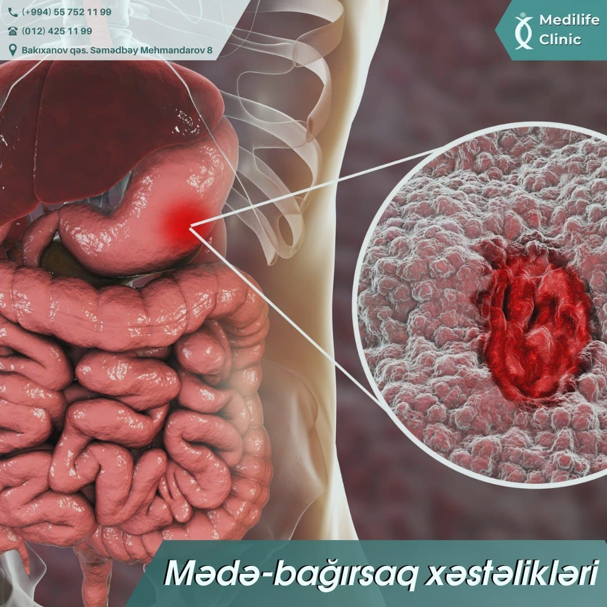
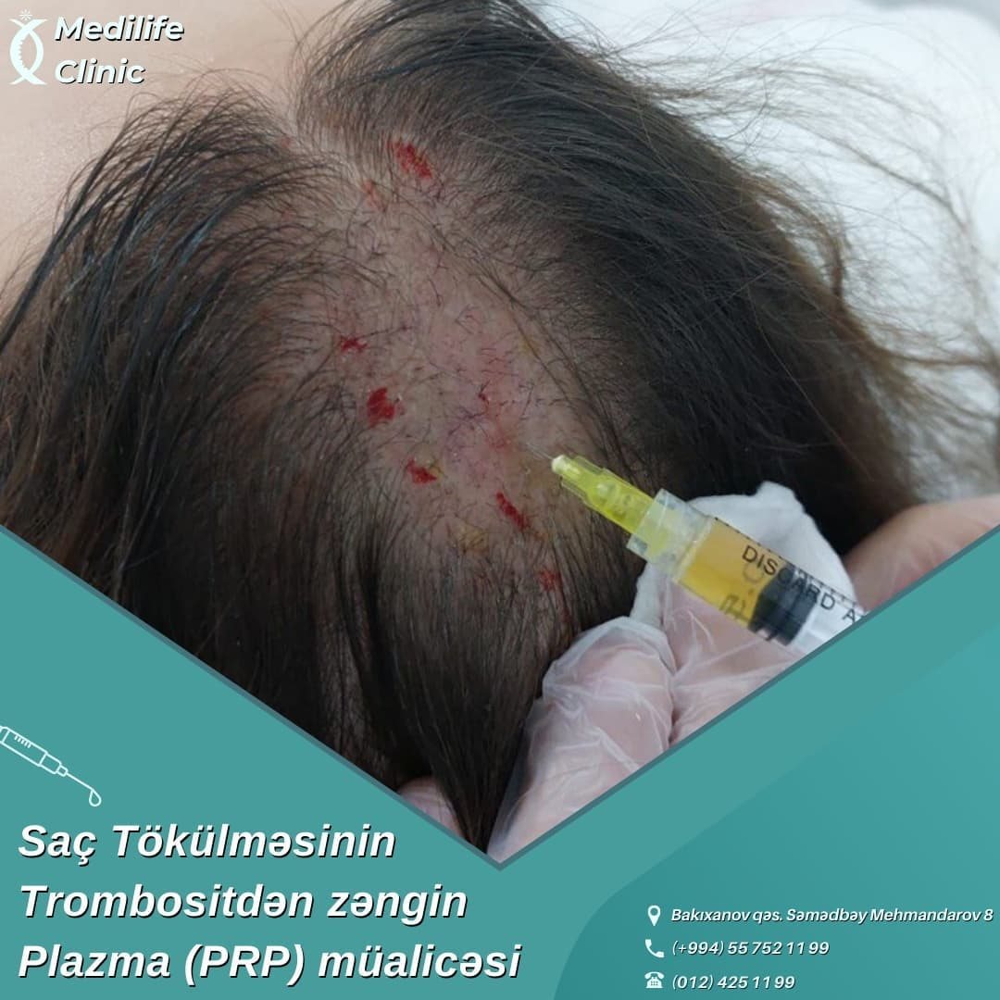
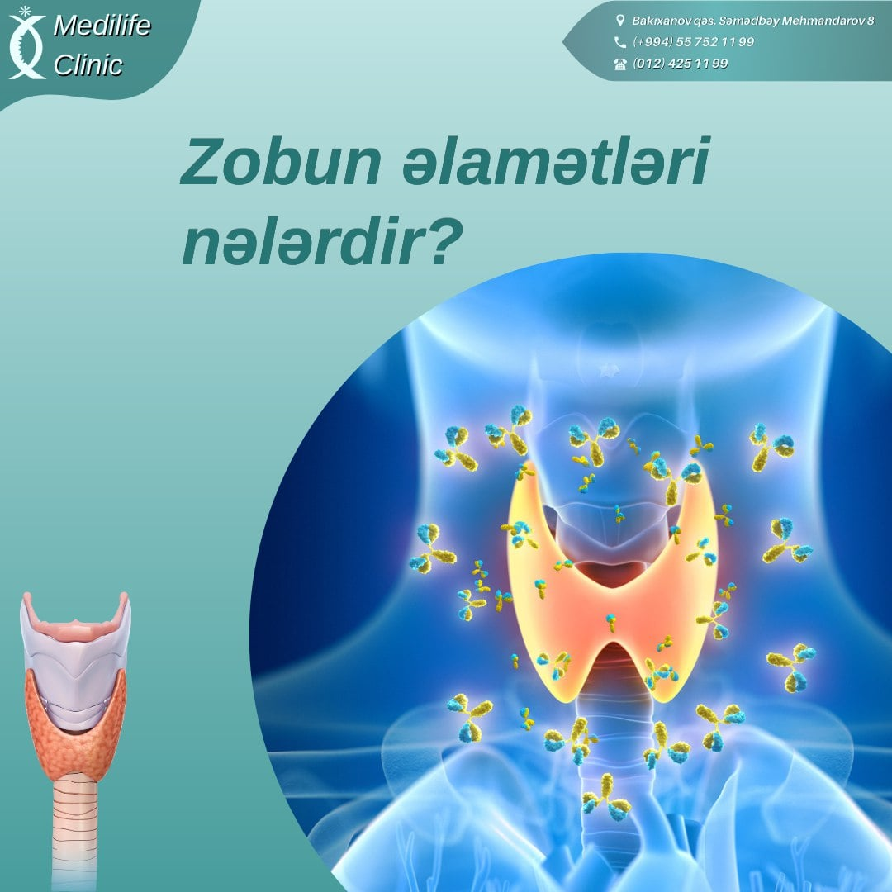
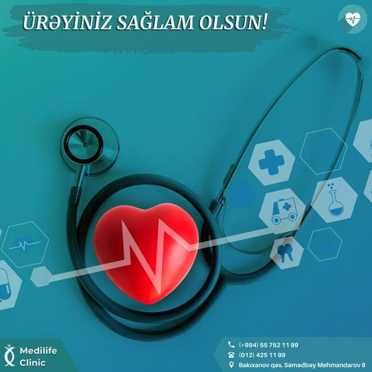
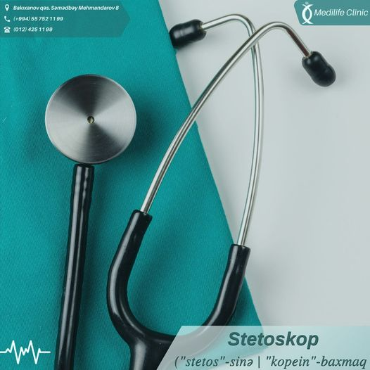
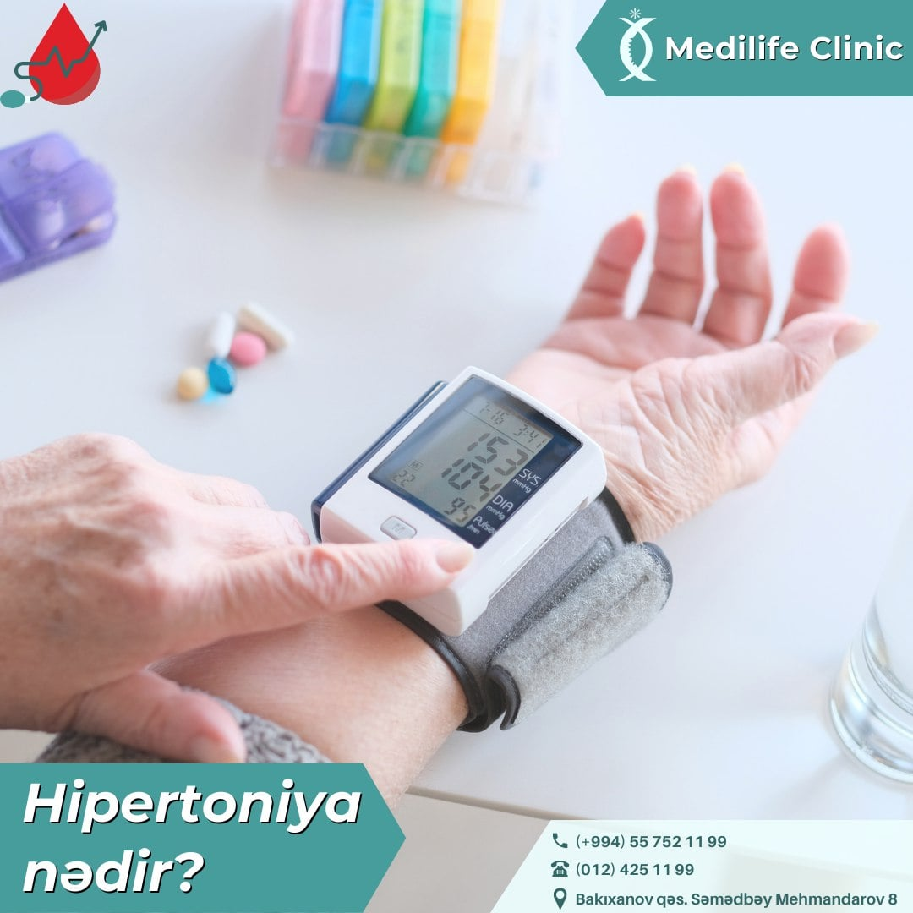
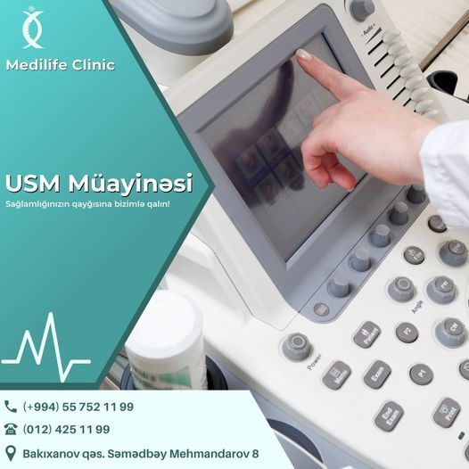
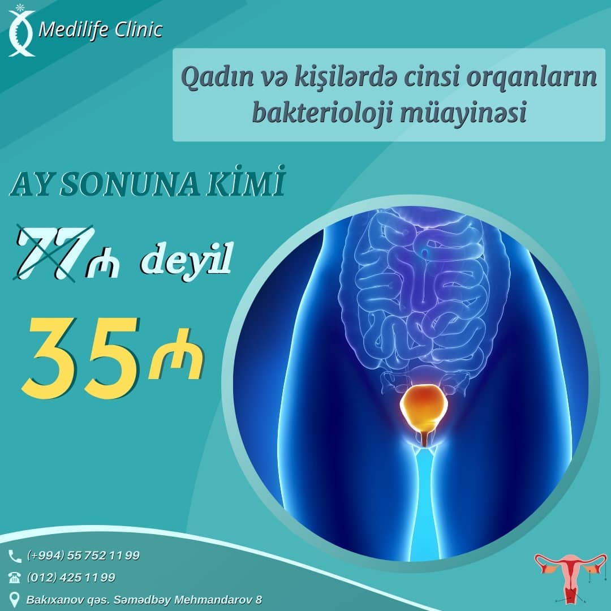

🔹Mədə-bağırsaq xəstəliklərinin əsas əlamətləri qarında ağrı, iştahanın pozulması, ürəkbulanma, qusma, gəyirmə, qıcqırma, qarının köpməsi, qəbizlik, ishal və s.-dir.
▫️Qarındakı ağrıların səbəbləri aydınlaşdırılmamış qarına isitqac qoyulması, işlətmə dərmanları verilməsi düzgün deyildir.
Ürəkbulanma və qusma mədə əzələlərinin geriyə peristaltikası ilə əlaqədardır
Mədə xəstəliklərinin səbəbi kimi HP(helikobakter piloridə) ola bilər.
Helikobakter pilor patogen bakteriyaların bir növü olub, mədə və on iki barmaq bağırsağı zədələyir.
Bu mikroorqanizmlər çoxlu miqdarda toksin ifraz edən parazitlərdir və onlar daxili orqanların selikli qişasını zədələyir. Həmin zədələnmələr iltihablara və qastritə, xoralara və bunun da nəticəsində xərçəngə gətirib çıxara bilər.
🔹️Qıcqırma turş mədə möhtəviyyatının qida borusuna düşməsi ilə əlaqədardır, bu hal mədə turşuluğu artdıqda müşahidə edilir. Bağırsaqlarda qaz çox əmələ gəlib, yavaş irəlilədikdə xəstənin qarnı köpür və ona əziyyət verir.
▫️Mədənin iltihabı qastrit adlanır. Mədəyə soyuq olduqda, qidalanma gigiyenası pozulduqda qastrit baş verir. O əvvəlcə şiddətli ağrılarla, yuxarıda göstərilən əlamətlərlə başlanır. Vaxtında düzgün müalicə aparılmazsa, xronik qastritə keçir. Xronik qastrit isə müəyyən dövrlərdə kəskinləşmələr verərək, daim xəstəni narahat edir. Bu da müalicə olunmazsa, mədə xorasına və bağırsaqların da iltihabı və xora xəstəliyinə keçə bilər.
📌 Ona görə də mədə-bağırsaqda hər hansı bir xəstəlik başlandıqda, tez müalicə etmək lazımdır.
Sağlamlığınız bizə əmanət 🩺
Şöbələrimiz

🔹️Trixologiya dermatologiyanın tük xəstəlikləri haqqında məşğul olan cavan bir sahəsidir. Saç tökülməsi kosmetoloji problem deyil və təkcə mezoterapiya, PRP və s. ineksion metodlarla müalicə olunmaz. Altda yatan səbəb araşdırılmadan saç tökülmələrinin effektiv müalicəsi qeyri mümkündür. Bu səbəbdən saç tökülməsi şikayəti zamanı saç və saçlı dərinin yalnız dermatoloq tərəfindən müayinəsi mütləq aparılmalıdır.
▫️Alopesia (dazlaşma)- başın və ya dərinin digər tüklü nahiyələrin keçəlləşməsinə gətirib çıxaran proqressivləşən saç tökülməsidir.
🔹️Alopesianın müalicəso dermatologiyada saç tökülməsinin müalicəsində mezoterapiyanın ve trombositdən zəngin plazmanın (PRP) əvəzsiz rolu var. Hər ikisi müxtəlif səbəblərdən olan saç tökülməsində istifadə olunur.
▫️Trombositdən zəngin plazma (PRP) qırışlar,sızanaq,ləkə,yara izləri,dəri çatlaqlarları,dəri sallanması və saç tökülməsində istifadə edilən bir üsuldur.PRP zamanı qanın tərkibindəki trombositlər plazmadan ayrılır. Bu trombositlər müxtəlif böyümə faktorları və faydalı maddələrlə zəngindir.Trombositlər regenerasiya prosesində iştirak edərək orqanizmdə baş verən bütün prosesləri sürətləndirir. Məhz buna görə, ağır vəziyyətdə olan insanlara (əməliyyatdan,travma və yaralanmadan sonra)qan yox plazma köçürülür.
🔹️Saçlarin PRP-si zamanı pasientlərin baş dərisinə qanın plazması yeridilir.Bu prosedurdan sonra saç tökülməsi dayanır hüceyrə daxilindəki metabolizm aktivləşir, tük soğanaqları qidalanır, tüklərin böyüməsi prossesi sürətlənir, qalınlaşır və sıxlaşır.
Sağlamlığınız bizə əmanət🩺

Qalxanvari vəzi orqanizmdə bir çox prosesləri kontrol edir. Bu səbəbdən bu orqanın xəstəlikləri də özünü müxtəlif simptomlarla büruzə verir.
Yalnız endokrinoloqa müraciət etdikdən sonra məlum olur ki, bu el arasında "zob xəstəliyi" kimi tanınan qalxanvari vəzi xəstəliyidir.
🔹Boğazda göynəmələr
Boğazda göynəmələr çox vaxt soyuqdəymə və ya qripin əlaməti olur. Lakin boğazda göynəmələr bəzən qalxanabənzər vəzdə olan pozuntular, törəmələr və düyünlər səbəbindən də irəli gələ bilər.
▫️Çəki problemləri
Qalxanabənzər vəzin fəaliyyətində artma (hipertireoz) bir sıra fəsadlarla müşahidə edilə bilər: çəkinin sürətlə azalması, iştahanın sürətlə artması.
🩺 Yuxululuq və əsəbilik
Əgər yuxululuq və istəksizlik istirahətdən sonra da keçmirsə, belə ki, bu da qalxanvari vəzinin fəaliyyətində pozuntuların göstəricilərindən biridir.
❗Bu simptomlar hiss olunduqda tez bir zamanda endokrinoloq müayinəsi mütləqdir.
Sağlamlığınız bizə əmanət🩺

Ürək-damar xəstəlikləri bütün dünyada ölümün əsas səbəbidir: digər səbəblərin heç biri hər il ÜDX qədər insan tələfatına səbəb olmur.🩺
Bu baxımdan Azərbaycan da istisna deyil – bizim ölkədə ölümə səbəb olan hallar arasında ürək-damar xəstəlikləri 59% təşkil edir.
❗ÜDX-nin yaranmasına səbəb olan əsas risk faktorları:
🔺meyvə və tərəvəzlərin az istifadə edildiyi balanslaşdırılmamış qidalanma;
🔺fiziki aktivliyin az olması;
🔺artıq bədən çəkisi və piylənmə;
🔺tütün və spirtli içkilərdən istifadə;
🔺qanda xolesterin və qlükoza səviyyəsinin yüksək olması;
🔺yüksək (>140/90) arterial təzyiq.
Ürəyinizi qayğısına bizimlə qalın! Sağlamlığınız bizə əmanət 🩺
Sağlamlığınız bizə əmanət🩺

🩺Bir dəfə 1816-cı ildə Parisdə gəzinti zamanı fransız həkim Rene Laennekin (1781-1826) diqqətini bir-biri ilə oynayan iki uşaq cəlb edir. 🤔
Onlardan biri ağac çubuğun bir tərəfini qulağına dirəmişdi, digəri isə çubuğun o biri tərəfini taqqıldadırdı. Uşaqların oyununu müşahidə edən alim bu vasitə ilə səsin daha yaxşı ötürüldüyünə əmin oldu. ✔️
🔸Laennek kağız vərəqi boru şəklində bükərək açılmasın deyə onu lentlə bağladı. Kağız borunun bir tərəfini xəstənin sinəsinə, digər tərəfini isə öz qulağına dirədi. Bu yolla o, xəstənin ürək döyüntüsünü açıq-aydın eşitməyə başladı.
❗Lennek öz ixtirasını "stetoskop" adlandırdı ki, bu da yunancadan tərcümədə "döş qəfəsi" anlamını verir.
Sonralar Laennekin ixtirası təkmilləşdirilərək müasir həkimlərin geniş istifadə etdiyi fonendoskopun yaradılmasına imkan verdi.✔️
Sağlamlığınız bizə əmanət 🩺

Hipertoniya qan təzyiqinin yuxarı olması deməkdir. 🩸
Bu, müxtəlif səbəblərdən özünü simptom şəklində də göstərə bilər. Eləcə də orqan və üzvlərdə baş verən dəyişkənlik nəticəsində özünü xəstəlik formasında büruzə verə bilər.😷
🔺Simtomatik hipertoniya və hipertoniya xəstəliyini ayırd etmək vacibdir. Hipertoniya xəstəliyi həm yaşlı, həm də cavan admlarda yarana bilər.
❗Bunun əsas yaranma səbəbləri oturaq həyat tərzi, diyetaya düzgün əməl etməmək, yağlı və duzlu məhsullardan çox istifadə etməkdir.
Daha bir səbəb əsəb sisteminin yüksək gərginliyə məruz qalmasıdır.
🔺Hipertoniya xəstəliyi birincili və ikincili olmaqla iki yerə bölünür.
Bunlar haqqında isə növbəti postlarda məlumat olacaqdır✔️
Sağlamlığınız bizə əmanət 🩺

Ultrasəs müayinəsi (USM) təhlükəsiz, invaziv olmayan və şüalanma verməyən müayinə metodudur. USM vasitəsilə səs dalğalarından faydalanaraq daxili orqanların görüntüsünü görmək mümkündür.
🔹Medilife klinikasında aşağıdakı orqan və sistemlərin Ultrasəs müayinəsi aparılır:
▫️Qarın boşluğu orqanları
▫️Sidik-ifrazat sistemi orqanları
▫️Yenidoğulmuşlarda bud-çanaq oynağının müayinəsi
▫️Qadın cinsiyyət sistemi: uşaqlıq və yumurtalıqlar (transabdominal və transvaginal), follikulmetriya (transabdominal və transvaginal), süd vəziləri
▫️Kişi cinsiyyət sistemi: prostat vəzi (transabdominal)
▫️Endokrin sistem: qalxanabənzər vəzi, böyrəküstü vəzlər✔️
Sağlamlığınız bizə əmanət 🩺
Doppleroqrafiya qan-damar sisteminin müxtəlif hissələrində qan dövranının vəziyyəti barədə dəqiq informasiya verir, arterial və venoz sistemdə əmələ gələn patologiyaları aşkar edir.✔️
❗Damarlarda əmələ gələn stenozun dəqiq lokalizasiyasını göstərir.
🤰Hamiləlik vaxtı dopplertoqrafiya vasitəsi ilə dölün qan dövranı, habelə cift və göbək ciyəsi barədə dəqiq informasiya almaq olar.
❗Döldə olan ürək qüsurlarını vaxtında aşkarlamaq üçün doppleroqrafiya əvəzsiz bir metoddur.
Doppler müayinəsi peşəkar həkimlər tərəfindən klinikaməzda aparılır✔️
Sağlamlığınız bizə əmanət 🩺

🔹Klinikamızda aparılan Urogenital və Af Genital analizləri 77 ₼ deyil 35 ₼-dır.
🔹Müayinəyə daxildir:
▫️Qadın və kişilərdə cinsi orqanların bakterioloji müayinəsi.
▫️Mycoplasma hominis.
▫️Mycoplasma spp.
▫️Ureaplasma urealyticum/parvum.
▫️Escherichia coli.
▫️Strepto B.
▫️Gardnerella vaginalis.
▫️Staphylococcus aureus.
▫️Staphylococcus aureus.
▫️Enterococcus.
▫️Neisseria gonorrhoeae.
▫️Candida spp.
▫️Trichomonas vaginalis.
📌Kampaniya bu ay sonuna qədər keçərlidir.
Qiymət yalnız ilk 15 nəfər üçün nəzərdə tutulub.
Yararlanmağa tələsin.
Qəbula öncədən yazılmaq lazımdır.
Sağlamlığınız bizə əmanət🩺
Medilife klinikası bütün xidmətləri yüksək səviyyədə aparır.
Daima xidmətinizdəyik...
🔹Labartoriya
🔹Qastroentologiya
🔹Endoskopiya
🔹Mama-ginekologiya
🔹Dermatologiya
🔹Trixologiya
🔹Terapiya
🔹USM(ultrasəs müayinə)
🔹Endokrinologiya
🔹Nevrologiya
🔹Urologiya
🔹Kardiologiya
🔹Pediatriya
🔹Otorinolarinqologiya(LOR)
🔹Rentgen
🔹Andrologiya